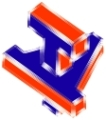
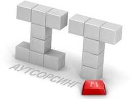

|  | ТехноДАР Тел. (3812) 33-99-43 |
Наша компания занимается технической поддержкой компьютеров и различных компьютерных систем.
Если Вам нужна помощь в настройке компьютеров и серверов, устранении неполадок, настройке интернет и локальных сетей то смело обращайтесь к нам.
|
|  | ||
| Мы предлагаем фиксированную ежемесячную стоимость услуг, обязательная профилактика систем и сервисов, быстрое время реакции на аварийную ситуацию, удаленное администрирование и линия поддержки по телефону. | Также мы продает программы, оборудование для построения сетей, компьютеры и оргтехнику. Со скидками для наших клиентов. | Мы работаем с причинами неисправностей, исключая их возникновение! Ваши проблемы - это наши задачи! Ваше участие сводится к простому телефонному звонку! |